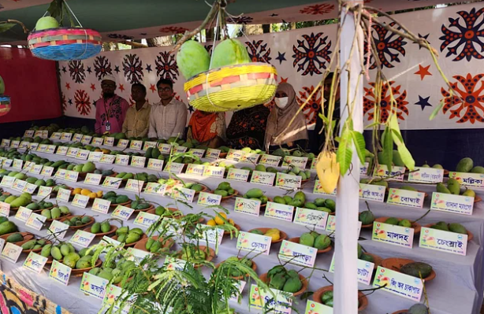

সাগরভাষা, বউভোলানো, জগৎমোহিনীতে মুগ্ধ দর্শক

আমের নাম সাগরভাষা। প্রতিবছর প্রচুর ধরে। খেতে মিষ্টি। পাকে দেরিতে। দাম পাওয়া যায় ভালো।
স্থানীয় জাতের এই আম খেতে যেমন সুস্বাদু, তেমনি বাণিজ্যিকভাবেও লাভজনক। স্থানীয় এমন ১৪৫
জাতের আম নিয়ে রাজশাহীর বাঘায় অনুষ্ঠিত হলো তিন দিনব্যাপী কৃষিপ্রযুক্তি মেলা।
কৃষি সম্প্রসারণ অধিদপ্তর আয়োজিত মেলা ১৩৫ জাতের আম নিয়ে শুরু হয়েছিল। তিন দিনের মেলা
শেষ হতে হতে আরও ১০ জাতের আম যুক্ত হয়। আমের স্বাদ, গন্ধ, চেহারা দেখে মুগ্ধ দর্শনার্থীরা। আজ
শনিবার বিকেলে এ মেলা শেষ হয়।
কবাঘা উপজেলা কৃষি কর্মকর্তা শফিউল্লাহ সুলতান বলেন, ‘আসলে রাজশাহীর আম বলতে আমি বাঘার
আমকেই দেখতে পাই। জেলার সব কটি উপজেলার মধ্যে বাঘাতেই সবচেয়ে সুমিষ্ট ও ঐতিহ্যবাহী
আমের চাষ হয়। বাঘার আমের ঐতিহ্যের সঙ্গে দেশবাসীকে পরিচিত করানোর জন্যই কৃষিপ্রযুক্তি
পমেলায় আমের স্টল করার আহ্বান জানাই। উৎসাহী চাষিরা বিচিত্র স্বাদের ও বিচিত্র নামের আম নিয়ে
মেলায় আসেন। ১৩৫ জাতের আম নিয়ে মেলা শুরু হয়েছিল। শেষ হতে হতে আম এসে দাঁড়ায় ১৪৫ জাতে।’
|